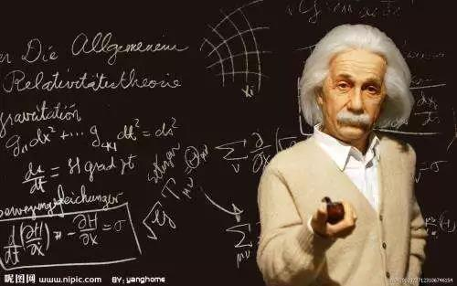

彼得德鲁克说：“一个企业只能在企业家的思维空间里成长,一个企业的成长被其经营者所能达到的思维空间所限制!”学习是打开思维空间即企业成长最快速的方式！

单靠科技是远远不够的，必须要让科技与人文科学以及人性相结合，其成果必须能够让用户产生共鸣。by 乔布斯
为什么科学独独出现在西方，而不是中国？
中国古代天文学这么发达，但它是科学吗？
亚里士多德“三段论”的意义何在？
正本清源，批判性、有逻辑的思维是怎么培养的？
当宗教遇上科学，是谁狂揍谁？
现代科学“用数学破译你，用实验拷问你”的独特气质如何养成？
前言
认识科学，应该有一个正确的开始！
什么是科学？
在今天，科学更受到无以复加的重视，“科学”一词附加了正确、进步、力量等等涵义。但是我们一听到科学，第一反应总是枯燥乏味的数理化知识大杂烩，联想到的总是一串串拗口难记的人名，那些玄乎的理论和技术发明，明明每个字都懂，但连起来就是不知道什么意思。其实科学走过的历程异彩纷呈、惊心动魄到超乎你想象。
科学与人文具有怎样的关系？
科学和人文的辩证关系：前者是后者的基础,后者是前者的“灵魂”。从“两种文化”(即科学与人文) 、功利意识与人文精神、科学与哲学关系分别说明了这一关系。坚持真理尺度和价值尺度的辩证统一，要求我们在实践中必须坚持和弘扬科学精神和人文精神。科学精神要求我们必须坚持以科学的实事求是精神去认识世界和改造世界。人文精神要求把人民的利益和人的发展 看作是一切认识和实践活动的出发点，贯彻“以人为本”的原则。
2017年12月9日西方哲学与（商业）文化总裁研修班第2期开班论坛特邀清华大学吴国盛教授带来《科学与人文》课程，中国顶尖的科学史主讲教授以文理渗透的独特视角带你重新审视科学，了解科学走过的历程，贯通古今，一窥中西方文化的本质差异，一探究竟，什么是科学。
主讲老师：吴国盛
●清华大学人文学院长聘教授、科学史系系主任。
●兼任国务院学位委员会科技史学科评议组成员、中国自然辩证法研究会科学传播与科学教育专业委员会主任。
●曾任第七、八届中国科学技术史学会副理事长、北京大学科学史与科学哲学研究中心主任。
●著有《科学的历程》《让科学回归人文》等系列著作。
课程大纲
一、科学精神的起源：
●“科学”一词的来历
●为什么中国古代没有科学
●为什么科学出现在希腊
●希腊数学与中国数学之比较
二、百年科技的历史回顾与哲学反思:
（一）两次科学革命
●物理学革命
●复杂性科学、非线性科学、系统性科学、生态科学
（二）四大理论模型
●现代宇宙学中的大爆炸模型
●粒子物理学中的夸克模型
●分子生物学中的DNA双螺旋模型
●地学中的大地板块模型
（三）两个超级能量
●核能的释放
● 登月
（四）两大生活技术
●基因技术
●计算机互联网技术
时间与地点
时间：2017年12月9日（周六）
上午9:00-12:00；下午13:30-16:30
地点：深圳清华大学研究院一楼报告厅
报名咨询：
请在右侧留言或致电400-115-1005（12小时*7天）报名
获取本周课程表请电话咨询400-115-1005（12小时*7天）
温馨提示：
1、为了便于您更全面的了解课程，有意向报读的话可以申请免费试听半天正式课程（推荐上午）。若申请下午继续试听，需填写报名表及缴纳报名费5000元。
2、请遵守课堂纪律，因您是试听学员，所以不主动邀请您参与发言和讨论，谢谢配合。若有相关疑问，可在课程所预留的互动时间或课间与老师或同学交流。请自带记录所用笔与笔记本；请上课时将手机调至震动或静音，并在教室外通话。
西方哲学与（商业）文化总裁班火热招生中

国际化思维必修课：西方哲学与（商业）文化总裁研修班汇集知名高校西学研究专家学者，通过对西方宗教、文化、历史、哲学、美学等方面的剖析，让企业经营管理者对比西方文明的文化基因，培养国际化的思维方式；结合自身具备的认知与对西方的认识，多角度的去认识这个世界，增进其对自然、对世界对未来的认知，建立合适自身企业的治理模式；助力现代企业的经营管理，获得经得起考验的商业哲学，帮助企业领导者带领企业取得更多促行业发展、企业进步的成就，迎接一带一路国际化机遇。
联系方式：400-115-1005 邮箱:fub@tsinghua-sz.org
地址：深圳市南山区高新科技园南区高新南七道19号深圳清华大学研究院五楼


版权所有：深圳清华大学研究院 备案：粤ICP备11063336号-3 深圳网站建设：沙漠风